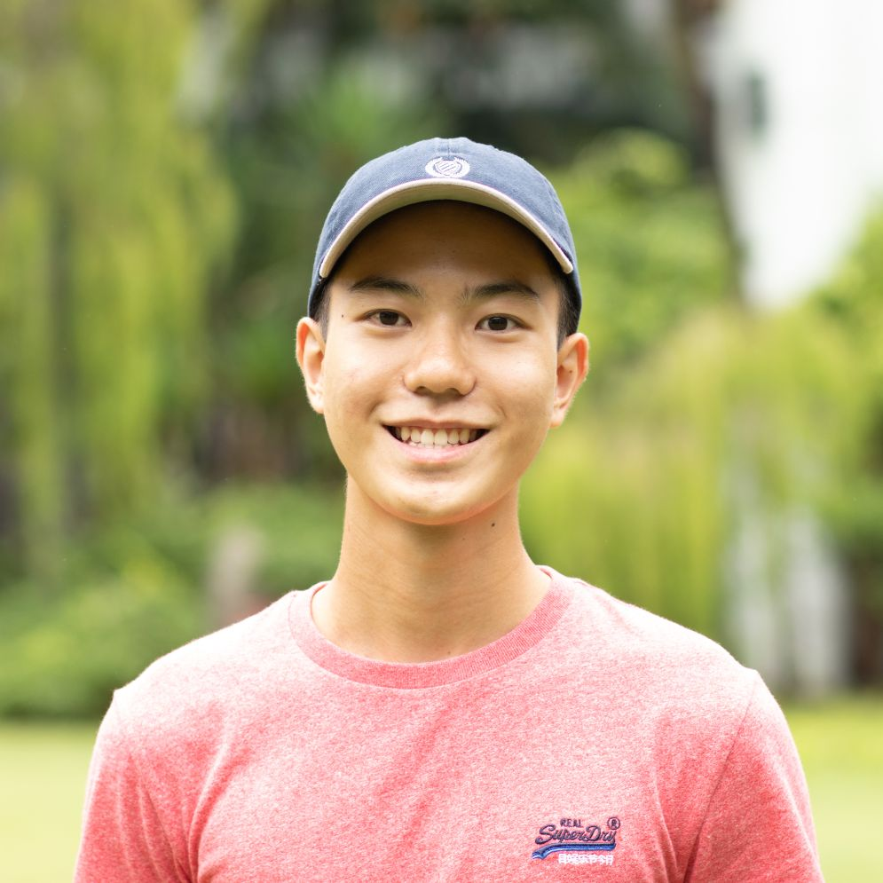

2019 GCE ‘A’ Level Results
A水准考试成绩
The school congratulates the 2019 Year 6 cohort for their excellent achievements in the 2019 GCE A-Level Examinations! A total of 365 Dunmanians sat for the Examinations, and they have done themselves and the school proud with their hard work and achievements!
The cohort achieved a median University Admission Score (UAS) of 85 and a mean UAS of 83, with 1 in 2 attaining the University Admission Score (UAS) of 85 or more rank points. 2 in 5 Dunmanians scored at least 3 H2 distinctions and 2 in 7 scored at least 6 distinctions. For 11 H2 subjects, 1 in 2 students attained a distinction.
In addition, 8 in 10 H3 students scored a Distinction or Merit for their H3 subjects, and 4 in 10 students who offered 4 H2 attained 4 H2 distinctions.
With our Dunmanians’ excellent academic performance and impressive achievements in the CCAs, they have proven themselves to be well-equipped to care, to serve and to lead, and are ready to contribute to society and Singapore as Leaders of Honour.
The following Dunmanians are just representative of many others who, have touched us with their stories and left a legacy. Their resilience, desire to always do their best and their holistic achievements will continue to inspire their juniors in years to come.
Thank you.
2019年A水准会考成绩分享
热烈祝贺2019年高中毕业生在 A水准会考中获得佳绩！共有365名学生参加考试，他们以不懈的努力和出色的表现，给自己和学校带来了荣耀和自豪！
他们的大学入学积分（UAS）中位数为85，平均分为83，其中二分之一的同学考获85分以上的佳绩。五分之二的学生考获至少3个主修特优；而七分之二的同学获得了至少6个特优的佳绩。在11门主修科目中，二分之一的学生考获了特优的佳绩。
此外，在修读深化课程（H3）的学生中，近五分之四的学生获得了特优或优秀的佳绩。修读四科主修的学生中，五分之二的学生考获4个特优。
德明人凭着骄人的学术成绩和出色的课程辅助活动表现，证明了自己的实力。我们完全有理由相信，他们已具备出色的关怀、服务和领导的能力，时刻准备着为国家和社会作出贡献。
以下德明人只是其中的一些代表。他们传承了德明精神，他们的故事感动着我们。他们的应变能力、追求卓越的精神和出色的整体表现，将激励学弟学妹们继续努力，让德明的优良传统代代相传，并发扬光大。
谢谢。
Ean Cheng Yan Heng
|
Ean demonstrates inspirational tenacity and grit. He was streamed into the ‘O’ Level class after Year 2. His mother succumbed to a long battle with cancer and passed away when he was in Year 3. Supported by family, teachers and schoolmates, Ean pressed on to emerge as a shining example of someone who perseveres despite grief and hardships. He attained an outstanding 8 points for his O Levels and chose to stay at Dunman High to do his A Levels. Ean demonstrated a great passion to serve the Wushu team as the Captain of the ‘A’ Division Boys team. His hard work paid off when he won medals in three national events. He also went the extra mile to patiently coach his juniors, not just in techniques, but also mentored them in terms of leadership and on a personal basis. Recognised for his achievements and contributions, he was given the prestigious Goh Chok Tong NextGen Outstanding Student Leader Award in 2019. Ean is someone with a passion for learning and for life. His journey of growth, resilience and transformation is an inspirational story for many to learn from. |
Jaime Tan
|
As a dedicated volleyball player, Jaime made significant contributions to the school’s sports scene. She was Captain of the school team and played an integral role in the team’s performance at the ‘A’ Division National School Games in 2018 and 2019. She was made the Captain of the Singapore Schools Volleyball team during the 10th ASEAN Schools Games in 2018. Her formidable personal performance meant that she was good enough to represent the country to compete with other international players. The international competition, held in Shah Alam, Selangor Malaysia, saw the best players from around the ASEAN region competing and upholding the values of good sportsmanship. Jaime’s ability to manage her various commitments is truly commendable and we celebrate her successes. |
Lim En Ning
|
En Ning displays exceptional grit in striving for her goals. She started track and field at a young age. Despite performing poorly in her first few competitions and sustaining serious shin injuries, she kept up the fighting spirit and clocked in many training hours upon her recovery. Her efforts eventually paid off and she won many awards in both the local and international arenas. In recognition of her contributions, she was awarded the Peter-Lim Scholarship for outstanding sporting achievements. She also won the Singapore Schools Sports Council (SSSC) Colours Awards multiple times and the SSSC Colours Awards (Distinction) in 2017 and 2018. En Ning also displayed good leadership abilities while serving as the Overall Captain for the Track and Field Team from 2018 to 2019. During her term, En Ning started several new initiatives such as implementing individual reflection and goal setting after each year’s National School Games (NSG) to spur greater growth in each member. She also initiated many additional training sessions and team-bonding activities for the team. Her sporting spirit and resilience are traits we are so proud of and are assured she will continue to excel in life. |
Jovan Yap Zheng Feng
|  |
Jovan is a socially conscious young innovator and inventor. Coming from a single parent family, Jovan is empathetic towards those with difficult life circumstances. Growing up, he often accompanied his mother and uncle as they volunteered in a welfare home. This encouraged Jovan to adopt a lifestyle of service to others. As his aptitude in the Sciences grew, his desire to use Science for the benefit of society grew stronger as well. He achieved the Gold Award for the Singapore Science and Engineering Fair (SSEF), and his project was one of the six shortlisted to be presented at the Intel International Science and Engineering Fair (ISEF). His team spearheaded research in socially-focused inventions, for better social integration and to serve those on the margins of society, and received the Second Runner-up position. Additionally, Jovan participated in programmes like the Prudential Young Trail Blazers Programme 2019 and the Singapore University of Technology and Design Hackathon 2018, where his teams came up with ideas to reduce the number of missing dementia patients and promote inclusivity. With a desire to give back to the community as well, Jovan was appointed the student leader to rally a group of students during the December school break, to set up science-based activity booths for a Christmas celebration event under the Mountbatten CDC in Mountbatten Community Centre. Jovan truly embodies the prized traits we hope to see in every Dunmanian. |
Valerie Tan Yi Jie
|
Valerie has a deep interest in the sciences. This has led to her dedicating a lot of time to the areas of STEM. She is a firm believer of scientific discovery as a collective endeavour rather than a solitary pursuit. In collaboration with various teams, Valerie led her teams to win many prestigious awards in the STEM field. In particular, she enjoys the community developed around research, especially valuing the intellectually stimulating discussions with experts in the field. Valerie conducted a year-long nano-materials science project under the mentorship of notable scientist Professor Sow Chorng Haur (NUS). During the course of this research, Valerie was fascinated by how the properties of materials at the nano-metre scale reacted under a focused laser beam and experimented continuously to test its suitability for industrial application. Valerie intends to pursue her undergraduate studies in biomedical engineering. She is a bright individual with a keen interest in and passion for science and research, as well as the heart for social good. We look forward to the significant contributions she will make to our community through innovative design and creative solutions. |
Siah Bing Ze
|
Bing Ze’s leadership and organisational skills were evident during his time as the Executive President of the Dunman High School Chinese Orchestra. He led many teams in the planning and execution of many of the Orchestra’s key events such as the 2019 Annual Concert entitled “An Evening of Chinese Rhapsodies”, Orchestra camps and the weekly practice sessions. The annual concert was noteworthy as Bing Ze liaised with teachers, instructors as well as managed over 150 performers and five planning subcommittees. The concert drew over 1200 audience members and was highly praised by all. He was also a leader who prioritised developing a high performing team. He worked with the different committees and observed the strengths and preferences of the different leaders within each committee. He then strategically deployed them to lead subcommittees for key events or to helm smaller events. He also devoted time to mentoring each of these leaders so that each of them will have the necessary competencies and support required for their role. With his desire to invest in the lives of others, we are proud to say Bing Ze truly cares, serves and leads. |
Han Ying, Megan
|
Megan was a Bicultural Studies Programme scholar. Her bilingual and bicultural proficiencies were recognised when she was awarded the Ee Hoe Hean Chinese Book Prize 2018, and nominated by the Prize Committee to deliver a speech at the award ceremony. This award recognises individuals who have performed exceedingly well in both the Chinese and English language, and at the same time, demonstrated exemplary character. She was also awarded the prestigious Prime Minister’s Book Prize in 2018. Megan sought opportunities to master her language competencies. She went through professional media skills training and interned at the Lianhe Zaobao Student Correspondent Club in 2018 producing numerous literary works which were published by the paper. Megan also contributed back to the larger society by participating in Project Heart Truths, where she leveraged on her aptitude in translation to help Ms Chng Seok Tin, a visually impaired author and Cultural Medallion Recipient suffering from terminal illness, to translate her works. In doing so, she made the author’s thoughts and work accessible to English readers. She was also the founder of the Twice Upon A Time 2018 project, in collaboration with the National Library Board, to promote bilingualism and biculturalism for young children, through a series of fun programmes. Megan dreams of making her mark in the media industry to create meaningful pieces that will make the world a better place. We look forward to celebrating her successes! |
Lu Dong Yue
|
Wanting to serve the school population, Dong Yue contested for the office of the Executive President (EP) in a school-wide election in 2018 and successfully received the mandate from the student body. As the EP, he was empowered to work with all student leaders, class committees and Co-Curricular Activity leaders to work towards the strategic objective of building a more cohesive and inclusive school culture. Dong Yue was one who listened from the ground. In addition, he is bestowed with a most pleasant temperament, never seeking to create inconvenience and discomfort to others, but always helping in as many ways as required. At the start of his term of service, he conducted several focused group discussions with various groups of students to find out the improvements they hoped to see in the school. With the feedback he gathered, he commenced several initiatives including the “Dunman Merchandise Series” to unite the school population through school souvenirs designed by students. An exemplary and committed leader, Dong Yue has truly demonstrated the qualities of a Leader of Honour. |
Chu Shuai Wu @ Freyja Chu
|
Freyja is an individual unafraid to pursue pathways that may be deemed as unconventional and onerous by others. Her unique subject combination of Art, English Literature and French at the H2 Level reflects this well. Freyja achieved impressive accomplishments in both artistic and literary fields. Her research essay was shortlisted as one of the entries for the Edwin Thumboo Literature Prize in 2019. Her final year project for H2 Art culminated in a large scale projection mapping installation featuring digitally animated graphics. She is particularly adept at digital illustrations and she displayed an astonishing self-taught mastery of this complex medium. She has also been generously helping the Senior High Literature department by embarking on a special project to paint tableaus from the set text in the syllabus. Her beautiful contributions have greatly aided teaching and learning, providing a unique perspective that her juniors can benefit from. Her strength lies in her ability to see the interconnected nature of disciplines and subjects. She often draws startling yet enlightening links between literature, language, art and the state of affairs of the world. We fully believe her love and passion for the arts and literature will inspire many! |
Amanda Soh Xuan Min
|
Amanda embodied the ideals of the Humanities discipline with her intellectual curiosity and efforts to expand her knowledge beyond the school curriculum. She participated in a wide array of current affairs competitions such as the 2018 IMDA-NIE ASEAN Quiz and the Harvard Model Congress Asia 2019. Moreover, she committed herself to an eight-month long research project on Situated Teacher Learning under the prestigious Nanyang Research Programme. Amanda displayed strong leadership skills which were evident in her role as the Secretary-General of the Dunman High Model ASEAN Plus Summit 2019. Besides being meticulous in her planning of the myriad programmes at the conference, Amanda provided personalised support and guidance for her peers. We are truly proud of her achievements and wish her the best in her pursuits! |
Chua Fang Wei
|
Fang Wei is one with strong analytical capabilities. In particular, she enjoyed intellectual debates. Articulate and opinionated, Fang Wei won the Outstanding Delegate Award at the River Valley Model United Nations 2018. She is also the co-author of the winning entry of the “Imagining ASEAN Essay Competition” (2018) organised by the National University of Singapore. The essay proposed sound recommendations for constructing future-ready education systems in Southeast Asia. Fang Wei believed in developing others and contributing to the community. She was a nurturing mentor at diplomATwork 2018, a MUN workshop for students, where she crafted learning materials and served as a facilitator during the event. Furthermore, she served the community as part of Kampong Kembangan Youth Executive Committee to empower young people to play an active role in creating a vibrant community. A driven, passionate and self-disciplined Dunmanian, Fang Wei’s qualities stand her in good stead for the future. |
Beatrice Chua Sing Ni
|
Beatrice is an influential leader who served well as the Vice President (Houses) of the Student Council. She constantly sought to develop her fellow Councillors and provided steadfast mentorship to the student in-charge of school-wide events such as Senior High Orientation and Sports Carnival. She gave them the opportunity to lead discussions, exercise decision making and challenged them to experiment with new ideas. When the organising committee faced difficulties and challenges, she encouraged and motivated them to persevere. Her strong organisation skills are also evident from how she managed the inaugural Senior High Open House in 2019. As the student in-charge, she communicated her vision to the various stakeholders and rallied them to work towards a common goal. She was fully dedicated to the project and made the effort to help her team members achieve excellence, leading to the success of the event. We wish her the best as she embarks on a new phase and continues to inspire many as a Leader of Honour. |
Lim Qi Yang
|
For Lim Qi Yang, studying at Dunman High School was an enriching and fulfilling experience. She was a dedicated member of and a dependable leader in St John Brigade and one of the outstanding training officers in Standard Management Committee Three Squad when she was in Senior High. Qi Yang was one of the four Dunmanians who responded swiftly to a call for help from a group of men who had been playing basketball on campus. The men were looking for someone who knew how to perform cardiopulmonary resuscitation (CPR) to rescue their teammate, Mr Koh Aik Koon, an alumnus, who had suffered a cardiac arrest and collapsed. For saving Mr Koh’s life, Qi Yang and her peers received the SCDF Community Lifesaver Award in October 2019. Qi Yang’s act of public spiritedness clearly exemplifies her full dedication to St John Brigade, her Co-Curricular Activity. For her invaluable contributions and unstinting commitment to St John Brigade, Qi Yang was fittingly given the Edusave Award for Achievement, Good Leadership and Service (EAGLES) in 2018 and CCA Service Award in 2018 and 2017. Keep caring, serving and leading, Qi Yang! We are proud of you! |
Kwek Zhong Wei, Isaac
| Isaac displayed passion and keen intellectual curiosity in the fields of STEM. He conducted a year-long nano-materials science project under the mentorship of notable scientist, Professor Sow Chorng Haur (NUS) to investigate how the properties of materials at the nano-metre scale reacted under a focused laser beam. As there was limited research carried out on this novel method, Isaac pored over literature and spent hours in discussions with his mentors to piece together scientific evidence to explain the science behind his method of synthesis.
His project attained a Gold Award at the Singapore Science and Engineering Fair in 2019 and was showcased at the Intel International Science and Engineering Fair (ISEF) in Phoenix, Arizona. Isaac was exemplary in character and behaviour and was a role model who inspired others. He devoted a lot of time and effort to Scouts for six years. He took it upon himself to train his juniors to take on leadership roles, as seen in his organization of the Patrol Leaders’ Training Course (2019). Isaac is clearly an individual with a clear sense of purpose. He constantly seeks new challenges to enrich his life. He thinks about how to make good use of his strengths to serve others. We are truly proud of how Isaac exemplifies the values that the school seeks to instil in all students, ‘To Care, To Serve and To Lead’. |
Lee Sin Yin
|
Sin Yin was a recipient of the Prime Minister’s Book Prize (2018) in recognition of outstanding students in bilingualism. She displayed insight when she explored issues from different perspectives in her thesis, a comparative study on modern and historical China. At the Bicultural Studies Programme Symposium in 2018, Sin Yin won the Silver and Best Concurrent Session Speaker awards. As Choir President, Sin Yin spearheaded a proposal to revive Centrestage, a singing talent-time platform to celebrate the musical talents of the student population. She was an exemplary role model to her peers when she took on multiple roles during the planning of Centrestage as she guided the small team to plan for the event. Sin Yin took part in Project HomeWorks and volunteered to clean up the rental flats belonging to the elderly or those with physical disabilities. With her passion to serve others, Sin Yin hopes to pursue a medicine course in university. |
Tia Bhaskar
|
Tia was an enthusiastic and highly motivated student who actively sought opportunities to cultivate her interests. She participated in the Singapore Model Cabinet 2018, a Model United Nations (MUN) conference based on the local government structure of Singapore. She proved her mettle and was able to express her opinions confidently despite the fierce competition from other delegates. Tia’s efforts resulted in her being awarded a Verbal Commendation from the Chairperson at the end of the conference. In addition, Tia was also passionate about creative writing in the poetic form. Her poetry entry was featured in the National Gallery Exhibition 2017. As a member of the DHAP Publicity Committee in 2018, she overcame technical difficulties in the conceptualisation and implementation of the outreach to external participants. Tia also displayed exemplary foresight in her leadership when she was selected as the Head of the Communications Committee and Student Hospitality for DHAP 2019. The success of both the DHAP 2018 and 2019 was in no small part due to Tia’s various contributions. Tia is a capable individual who sets clear goals and is committed to achieving them. She has good leadership capabilities with a heart for serving others. We wish her all the best for her future endeavours and congratulate her on her success! |
Ho Shu Han
|
Shu Han has a passion for learning and sought ways to grow his knowledge. He embarked on a Research Project Defence Science and Technology Agency (DSTA) Young Defence Scientists Programme in 2018 and worked on Data Analytics despite having little experience in the discipline of Computing. Shu Han devoted himself to developing his proficiency in programming algorithms from scratch. He readily shared his experiences, knowledge and skills he had gained with the Year Three students during a school assembly programme. Shu Han immersed himself fully in a wide range of activities inside and outside of class. His leadership skills were evident in his roles as the Overall-in-Charge of the Dunman High Leadership Symposium as well as Student Conductor of Guitar Ensemble. He paid close attention to the morale and dynamics of the team, and leveraged on the strengths of his members to achieve the team’s common goal. A nurturing leader, Shu Han believes in empowering and inspiring others. Keep shining, Shu Han! |
Aaron Mai Shengting
|
One of nine students in Singapore to be awarded the Language Elective Scholarship, Aaron is highly proficient in the German language and has good knowledge of the German culture. He played an integral role in hosting the Ambassador and visitors from the German Embassy during their visit to Dunman High School. Aaron also has a strong interest in the Sciences. He won medals for both the Physics and Chemistry Olympiads, and opted for H3 Chemistry to deepen his knowledge in the field. Aaron demonstrated outstanding leadership qualities in many ways. As the Quartermaster of the Tennis team, he implemented new initiatives, such as curating a new role of Training Head, and also a revised training system to maximise the use of the courts. As the deputy Coordinator of the Prom Night in 2018, he incorporated new segments to liven up the evening and make it more memorable. Aaron truly exemplifies the holistic outcomes we wish to see in Dunmanians, and we are sure he will continue to excel in his pursuits. |